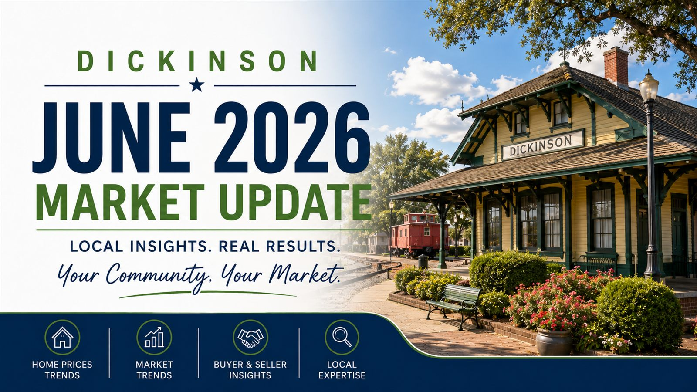

Home › Dickinson › Market Update — June 2026
Market Update212 closed sales, a $294,500 median — and a 52% listing failure rate, the highest of any market I track. Here's what six months of HAR MLS data (December 12, 2025 through June 10, 2026) says about Dickinson, neighborhood by neighborhood.

Every six months I pull the full HAR MLS picture for the markets I work — not just the solds, but the actives, the pendings, and the listings that failed to sell. Dickinson's June 2026 numbers tell a sharper story than any other market I track, and it comes down to one statistic I'll get to in a moment. First, the basics, based on the six months starting December 12, 2025.
Dickinson closed 212 sales at a median price of $294,500 — call it $295K — and a median of $152.92 per square foot. Closed prices ran an enormous range, from $25,000 up to $890,000, which tells you Dickinson is really several different markets stacked under one city name: older established homes, teardown lots, and a wave of new construction. The median home took 34.5 days on market to go under contract.
Sellers who actually closed did extremely well on price: 99% of final list price and 97% of the original asking price. New construction was a major factor — 65 of the 212 closings were new builds, which is a heavier new-construction share than most of my markets. On the supply side, there are 168 active listings right now with 54 more under contract, which works out to 4.8 months of supply — the heaviest inventory of any market I cover, and into balanced-to-buyer's territory.
Month to month, closings were steady rather than seasonal. December (which my window only catches from the 12th onward) logged 23 closings at a $285,000 median; January slowed to 19. The pace then picked up — 36 closings in February, 40 in March, and 41 in April, the busiest month of the window. May ran 35 closings at the window's highest monthly median ($308,000), and the first ten days of June produced 18 more at $292,000. Monthly medians bounced in a tight band between roughly $282,000 and $308,000, so don't read any single month as a trend — the volume was remarkably consistent across the spring.
Let me be upfront about the sample: Nicholstone closed only 5 sales in six months, so every figure here is directional. It's an established older neighborhood, and the price spread proves it — closings ran from $135,000 to $785,000, with a $240,000 median sitting in the middle of five very different homes. The five that sold did so fast (8-day median DOM) and at 100% of list price, so when a Nicholstone home is priced right, buyers move.
The problem is everything that didn't sell. 8 listings failed against those 5 sales — a 61.5% fail rate — and with 10 active listings against this thin sales pace, the math works out to roughly 12 months of supply, by far the heaviest in this report. Nicholstone is the clearest example of the citywide pattern in miniature: priced-right homes go quickly, but a lot of inventory is sitting because it's asking more than this neighborhood is paying.
Bay Colony was the engine of the Dickinson market — 57 closed sales, by far the most of any neighborhood in this report, at a median of $295,000 (range: $186,780 to $549,999). A quick orientation, because it confuses people: Bay Colony is an inland master-planned community built around manmade lakes — it is not a canal or bay-access neighborhood — and although it sits inside League City's limits, it's zoned to Dickinson ISD. School assignments are address-specific, so always confirm the assignment for any address before purchasing.
The performance was excellent across the board: 28-day median DOM, an essentially perfect 99.7% of list price, and just 16 active listings against that strong sales pace — about 1.7 months of supply, the tightest established-neighborhood number in this report. Its 29.6% fail rate is well below the city's 52%, and with 18 homes already pending, Bay Colony is the one corner of Dickinson that genuinely behaves like a seller's market. It also explains why the citywide median is what it is — Bay Colony's $295,000 median basically is Dickinson's $294,500 median.
Pedregal is the standout of this entire report. It's a new-construction community by Cervelle Homes, and over the six months it closed 21 sales — all 21 new builds — at a $495,000 median (range: $445,791 to $710,000), the highest of any Dickinson-area neighborhood I track. Homes went under contract in a median of 22 days at 100% of list price, with a median of $195.34 per square foot.
But here's the figure that stops me: Pedregal's failure rate was 0%. Not a single listing terminated, expired, or withdrawn — every Pedregal listing in the data either sold or went pending. In a market where the citywide failure rate is 52%, a neighborhood where nothing failed is genuinely remarkable, and it speaks to disciplined builder pricing on a product buyers want. With 9 active listings and 3 pending, supply runs about 2.6 months. One note on the data: Pedregal carries League City mailing addresses, so its figures come from its own MLS export rather than the main Dickinson pull.
Peacock Isle is a new Bayway Homes community with genuine Dickinson Bayou frontage, and at just 5 closed sales it's another small sample — read it as a sketch. The sketch is a premium one: a $383,000 median (range: $345,000 to $547,714), 100% of list price, and a median of $230.17 per square foot — the highest price-per-foot of any Dickinson neighborhood in this report, which is what you'd expect from new construction on the water.
The fail rate sat at 50% — 5 listings failed against the 5 that sold — but on numbers this small, and in an early-stage builder community where listings come and go on the builder's schedule, I'd weight that lightly. With only 3 actives and 2 pendings, supply runs about 3.6 months. The takeaway: when a Peacock Isle home is priced to the bayou-frontage premium and finds its buyer, it closes at full ask.
Bayou Maison is a gated new-construction community, and with 10 closed sales it's a borderline-small sample. The median landed at $295,000 in a notably tight band ($243,400 to $319,400) — that narrow range is the signature of a builder selling a consistent product line. Sellers held price well at 99% of list, and at $143.49 per square foot it's among the more affordable per-foot options in Dickinson.
Two numbers deserve an honest mention. First, days on market: the median was 80 days, well above the citywide 34.5 — builder inventory routinely lists early and carries longer, so that's expected here rather than a warning sign. Second, the fail rate was 52.4%, right at the city average; 11 listings failed against 10 sales. With 6 actives and 2 pendings, supply runs about 3.6 months. For buyers, the slower pace is leverage; for sellers, it's a reminder that even in a tidy builder community, the Dickinson pricing rule still applies.
Bayou Bend Estate is new construction with a private bayou boat ramp, and at 6 closed sales it's a small sample to read carefully. The median came in at $337,900 within a very tight range ($332,900 to $363,900) — again the fingerprint of a builder pricing a consistent product — at 97% of list and $145.03 per square foot.
The headline number here is patience: a median of 203 days on market, the longest of any neighborhood in this report by a wide margin. That's a builder community where homes list well ahead of their close and the clock runs long; it's not a sign that finished homes are being rejected. Still, the supply side is real — 7 active listings work out to roughly 7 months of supply, and the fail rate was 60% (9 failed against 6 sold). Buyers here have time and selection on their side; sellers need a builder-grade pricing strategy and the patience to match.
Dickinson is the most buyer-friendly market I work right now — 4.8 months of supply, the heaviest of any city I track, and a 52% listing failure rate that means a large share of today's inventory has already proven it's priced wrong. That combination gives you genuine leverage. A stale listing in Nicholstone, Bayou Maison, or Bayou Bend Estate — neighborhoods carrying months of supply and high fail rates — is a real negotiating opportunity.
But leverage isn't universal here, and that's the part most buyers miss. Bay Colony at 1.7 months of supply and Pedregal at a 0% fail rate are not waiting on you — well-priced homes in those pockets close at 99–100% of list, fast. The skill in Dickinson is reading which situation you're in: a tight, well-priced segment where you compete, versus an overpriced, slow-moving listing where you make the case for less.
I'll give it to you straight, because the data does: 52% of Dickinson listings failed to sell over the last six months — the worst odds of any market I cover. More than half. Same city, same six months, same buyer pool. The difference between the 212 homes that closed and the 230 that didn't was almost entirely price. The homes that sold closed at 99% of list; demand for a correctly-priced Dickinson home is alive and well.
So the playbook isn't complicated, but it's non-negotiable: price off recent closed comps, not active wish-lists or a Zillow estimate, and price it right on day one — because in a 4.8-month-supply market, a listing that starts too high doesn't get a second first impression. The proof is in the neighborhoods that get it right: Bay Colony and Pedregal post 29.6% and 0% fail rates precisely because their pricing is disciplined. If you want to know what a defensible number looks like for your specific house, start with a TruMarket™ home value report or reach out directly — I'll show you the comps behind it.
Based on HAR MLS data, Dec 12, 2025 – Jun 10, 2026. Statistics computed from closed, active, pending, and failed (terminated/expired/withdrawn) listings. Failure rate = failed listings ÷ (failed + sold). Pedregal's figures come from its own MLS export, as it carries League City mailing addresses. Information deemed reliable but not guaranteed.
What is the median home price in Dickinson in 2026?
Over the six months ending June 10, 2026, the median closed price in Dickinson was $294,500 across 212 sales, at a median of $152.92 per square foot. Closed prices ranged widely, from $25,000 to $890,000, reflecting everything from teardowns and small older homes up to new-construction and bayou-frontage properties.
Is Dickinson a buyer's market or a seller's market right now?
Dickinson leans toward a balanced-to-buyer's market. There are 168 active listings against the recent sales pace — about 4.8 months of supply — with 54 more homes under contract. Sellers who closed did very well on price (99% of final list price), but the 52% listing failure rate means more than half of the homes that came to market did not sell. In Dickinson, pricing is the whole game.
Why do so many Dickinson listings fail to sell?
Of every Dickinson listing that either closed or came off the market without selling during this period, 52% were terminated, expired, or withdrawn — 230 failed listings against 212 closed sales. That is the highest failure rate of any market I track. The homes that did sell closed at 99% of list price, so the issue is not soft demand for well-priced homes — it is that overpriced listings simply sit and die. Correct pricing from day one is the difference.
Which Dickinson neighborhood is the strongest seller's market?
Pedregal, the new-construction community by Cervelle Homes. Over the six months it posted 21 closed sales at a $495,000 median, 100% of list price, and a 0% failure rate — every Pedregal listing in the data either sold or went pending, with not a single termination, expiration, or withdrawal. In a market where the citywide failure rate is 52%, that is remarkable. Bay Colony is the strongest established neighborhood, with 57 sales at a $295,000 median, 99.7% of list, and just 1.7 months of supply. (Pedregal's figures come from its own MLS export, as it carries League City mailing addresses.)
How long do homes take to sell in Dickinson?
Citywide, the median was 34.5 days on market — but that number hides a lot of spread. Bay Colony moved in a median of 28 days and Nicholstone in just 8 days, while new-construction communities ran far longer: Bayou Maison sat a median of 80 days and Bayou Bend Estate a median of 203 days, because builder inventory tends to list early and close on the builder's timeline rather than the resale clock.
What is the most affordable neighborhood in Dickinson?
Among the neighborhoods I track, Nicholstone posted the lowest median at $240,000 — though on only 5 closed sales, so treat it as directional. It is an established older neighborhood with a wide spread of homes, from a $135,000 sale up to $785,000 in the same six months. Bay Colony and Bayou Maison both came in at a $295,000 median, in line with the citywide $294,500.
More than half of Dickinson listings failed to sell over the last six months — and nearly every one of those failures traces back to price. Let's get yours right the first time, with real comps behind the number.